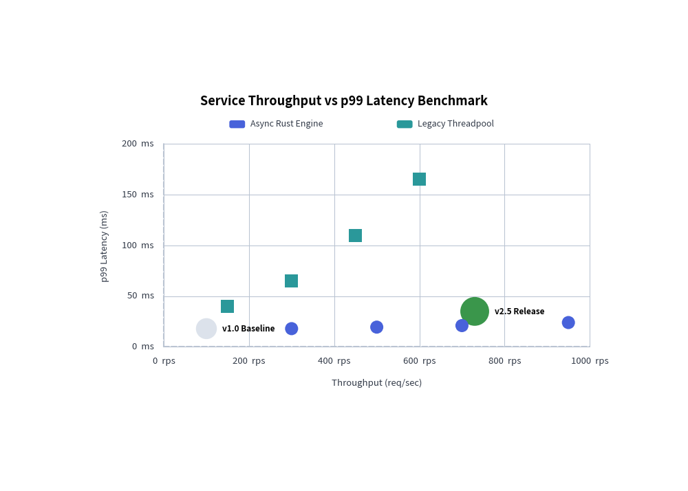
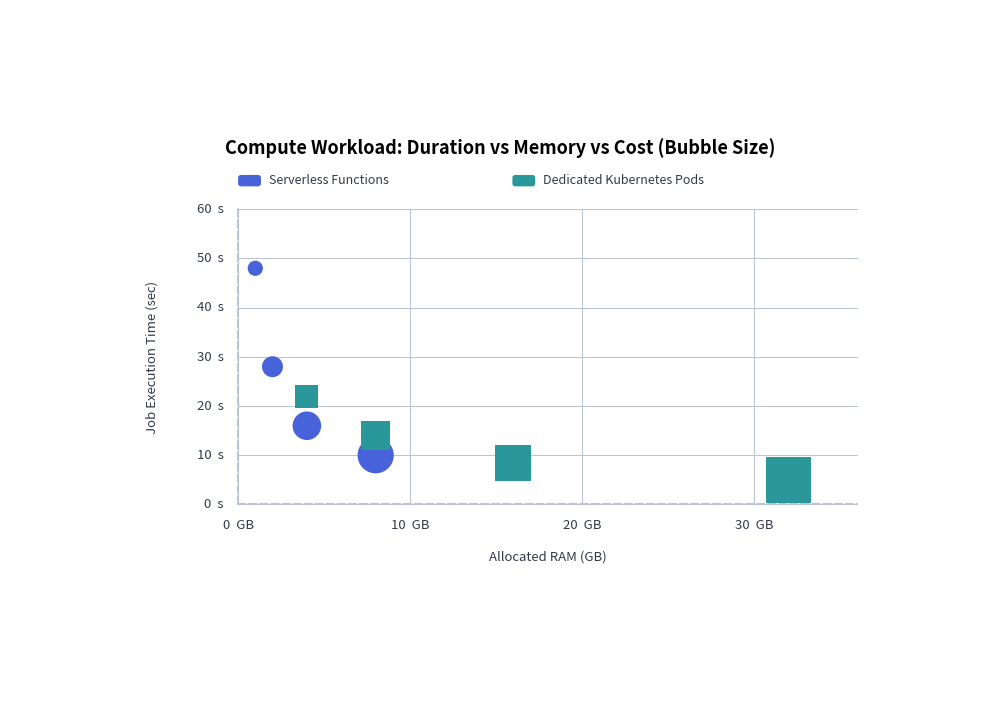

ScatterChart: Dual-Axis Plots & Multidimensional Bubble Charts
ScatterChart plots continuous numerical data across dual Cartesian axes ($X$ and $Y$). It is ideal for identifying statistical correlations, clustering patterns, latency vs. throughput trade-offs, and 3D bubble analysis (where marker radius encodes a third numerical variable).
1. Overview & Topologies
Latency (ms) ▲
100 │ ● Legacy (High Latency)
80 │
60 │ ▲ Competitor
40 │ ●
20 │ ● Optimized v2.0
0 └────────────────────────────► Throughput (req/s)
0 200 400 600 800
- Dual Continuous Axes: Unlike categorical charts where the X-axis represents discrete bins,
ScatterChartcomputes independent numerical scales for both axes using linear or logarithmic scaling. - Annotated Individual Points: Use
chart.add()to place highlighted reference points with dedicated text callouts. - Multidimensional Bubble Plots: Passing 3-tuples
(x, y, radius)toadd_series()scales point sizes dynamically to communicate a third dimension. - Decoupled Legend: Render series legends anywhere on the canvas via
draw_legend(...).
2. Constructor & Configuration
from drawlib.charts.scatter import ScatterChart
from drawlib.styles import Styles
chart = ScatterChart(
axis_line_style=Styles.MutedDashed,
axis_text_style=Styles.Muted.patch(text_size=9.5),
grid_style=Styles.MutedLight,
width=85.0, # Total chart bounding width
height=52.0, # Total chart bounding height
title="Service Throughput vs Latency",
title_style=Styles.BlackBold.patch(text_size=13.0),
default_radius=1.0, # Default radius for points
default_shape="circle", # "circle", "square", "rhombus", "triangle"
)
3. Benchmark Scatter Plot with Baseline Callouts
Combining series with individually annotated baseline points makes system performance reports immediately actionable:

4. Multidimensional Cloud Cost Bubble Chart
By providing 3-tuples (x, y, radius) in series data, the radius reflects a 3rd numerical dimension:
